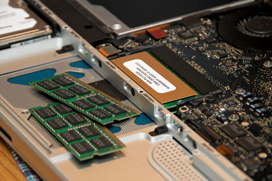

Parity <<
Previous Next >> Introduction to BIOS, CMOS, and Firmware
Installing Memory Modules
Installing memory is a common computer upgrade and a very easy task to perform. Memory modules are installed as “sticks” (or modules) of memory into the “slots” on the motherboard.
安裝內存是電腦的常見升級，並且是很容易執行的任務。內存模塊作為內存的“棒”（或模塊）安裝在主板上的“插槽”中。

Memory modules or “sticks.” Photo used under CC-BY license from Yutaka Tsutano.
The process of installing memory sticks is fairly easy, but caution and precision are necessary. To install memory sticks (or modules):
- Always ensure you take proper ESD (electrostatic discharge) protection measures to ensure both the motherboard and memory modules are not harmed during installation.
- Turn off the computer and unplug the power cord.
- Open the case and begin the installation of the memory sticks. Always hold the memory sticks by the sides of the chips and never by the gold contacts.
- Line up the memory module’s connector with the slot on the motherboard.
- Verify that the locking tabs are in the open position.
- Push the module straight down until the tabs swivel to the locking position (this takes force).
Important note: Never touch the gold connectors on the modules! Corrosion of the contacts can occur, or the module may be damaged due to electrostatic discharge.
To explore more about how to install RAM, visit www.wikihow.com/Install-RAM.
安裝記憶棒的過程相當容易，但是必須謹慎且精確。要安裝記憶棒（或模塊）：
1.始終確保採取適當的ESD（靜電釋放）保護措施，以確保在安裝過程中不會損壞主板和內存模塊。 2.關閉計算機電源，然後拔下電源線。 3.打開外殼，開始安裝記憶棒。始終將記憶棒放在芯片的側面，而不要緊握金觸點。 4.將內存模塊的連接器與主板上的插槽對齊。 5.確認鎖定卡舌處於打開位置。 6.垂直向下推動模塊，直到卡舌旋轉到鎖定位置（需要用力）。
重要說明：切勿觸摸模塊上的金色連接器！觸點可能會腐蝕，或者由於靜電放電會損壞模塊。
Parity <<
Previous Next >> Introduction to BIOS, CMOS, and Firmware